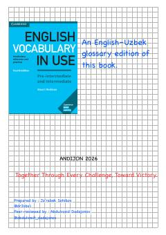

CEIngliz tili so'z boyligini oshirish uchun o'zbekcha izohli o'quv qo'llanma.
Ushbu kitob ingliz tili so'z boyligini oshirishga mo'ljallangan o'quv qo'llanmaning o'zbekcha izohli lug'at ko'rinishidagi nashridir. Unda so'zlarni yodlash usullari, lug'at bilan ishlash va asosiy mavzular bo'yicha so'z birikmalari o'zbek tilidagi tarjimalari bilan keltirilgan.